| PA8000数控系统操作 |
手动方式
在选择机床后的第一个界面，或用户在点击“手动方式”按钮后，系统将切换到手动方式界面，如图所示:
此时可选择不同的手动方式来移动机床，但需在处于“机床准备好”状态才可实现（在紧急停止状态时，可用Ctrl+“C”键来取消）。
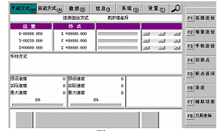
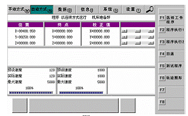
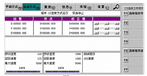
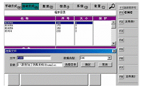
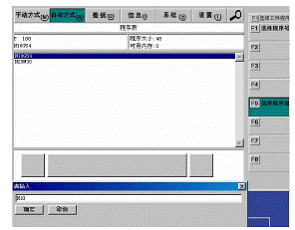
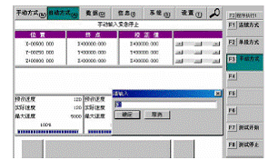
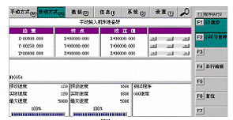
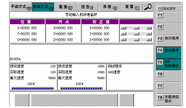
点击“数据”主任务按钮后，系统切换到如图所示的界面。
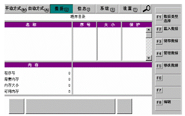
在此主任务下，允许用户载入、储存、管理和修改NC工件程序和其它的相关篇置值。一级子功能包括：
数据类型选择：选择数据类型如NC工件程序、参数P、路径补偿、长度补偿和相关工件坐标系和刀库。
载入数据：从硬盘或软盘中载入数据。
储存数据：储存数据到硬盘或软盘。
管理数据：对NC存储器内数据进行拷贝、删除或更名等操作。
1）点击“数据”主任务栏下的“数据修改”。出现“数据修改”子任务栏界面，点击其中的“程序号”，则出现如下图对话框。
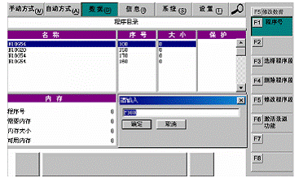
2）在“请输入”对话框中输入程序名。以“P”开头。
3）按“确定”后，界面变为如图所示。此时可编写程序。
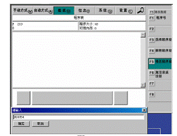
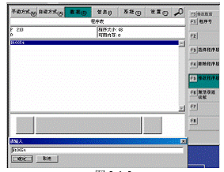
5）继续编写，每编写一行需按“确定”键读入。
6）编写完毕后，按“取消”键退出。
保存程序
1）“新建”后，点击“数据”任务栏，在其子任务栏上，点击“存储数据”界面切换如下图。
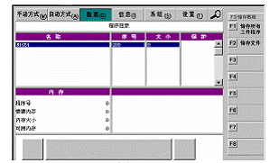
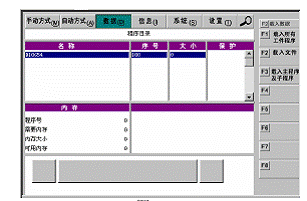
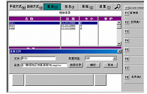
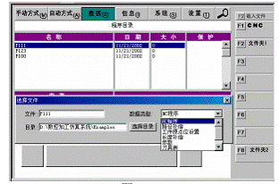
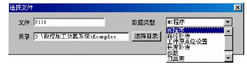
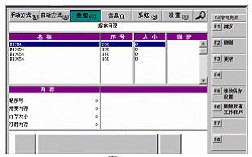
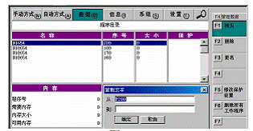
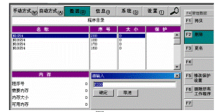
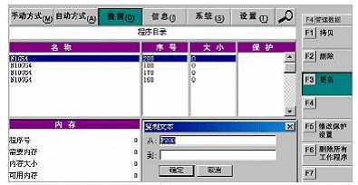
删除所有工作程序
当点击“删除所有工作程序”后，系统弹出对话框如图2-4-5所示，点击“是”按钮后将删除内存中的所有程序，点击“取消”可取消此操作。
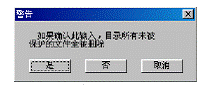